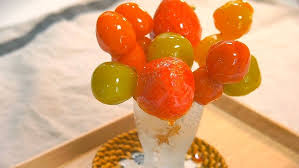

| Name |
Weight/Volume |
Description |
Ingredients |
Image |
| Brownies |
18.3 ounces and 415 grams |
Brownies is dessert that is made of chocolate, flour, sugar, egg, and butter. Brownies taste rich and chocolatey but this depends on what recipe of brownies but most brownies are fudgy, cakey and chewy. It is a wonderful dessert, its moist and chocolatey. |
Butter or Oil, Eggs, Flour, Sugar, Cocoa, Vanilla, Corn Syrup, Corn Starch, Canola Oil, Artificial Flavor, and Baking Soda. |
|
| Cakes |
Weight: 2-3 pounds
Volume: 10 cups |
Cakes are sweet because of its sugar content but there are some cakes that are not too sweets. It also comes to different flavors such as strawberry, red velvet, chocolates, etc. Cakes are enjoyed on events like birthdays and wedding or any other occassions. |
Flour, Sugar, Eggs, Butter or Oil, Leavening Agent(Baking Powder or Baking Soda), Liquids (Milk, Water, or any other liquids added to provide moisture and help thr batter to come together). |
 |
| Chocolates |
Weight: 42 grams
Volume: 30 cubic cm |
Chocolates are enjoyed around the world especially kids. Its known for its rich, bittersweet flavor and smooth texture. Chocolate can be dark, brown, white, even milk chocolate brown. |
Cacao Beans (Cocoa), Cacao Butter (Cocoa Butter), Sugar, Milk (Powdered), Lecithin. |
 |
| Cookies |
Weight: 30-40 grams
Volume: 25-35 cubic cm |
Cookies are flat, baked treats made of flour, sugar, eggs, and butter or oil. They come from differet variety and decarted with nuts, chocolate chips, sprinkles, mallows,etc. Its texture is chewy to crispy and crunchy, its a good treat for chilfren and even adults. |
Flour, Sugar, Eggs, Leavening Agents(Baking Soda and Baking Powder), Flavorings (Vanilla extract, spices(cinnamon, nutmeg), citrus zest, or extracts add depth and complexity), Fillers/Mix-ins (Chocolate chips, nuts, dried fruits, candies, and other additions), and Salts. |
|
| Cupcakes |
Weight: 60-80 grams
Volume: 100-150 cubic cm |
Cupcakes are small individual cakes baked in foils, its an alternative for cake if there is no available cake. Its size is perfect for individual servings, like cakes it also comes into different flavors. Its a perfect option for events. |
Flour, Sugar, Eggs, Leavening Agents(Baking Soda and Baking Powder), Flavorings (Vanilla extract, spices(cinnamon, nutmeg), citrus zest, or extracts add depth and complexity), Fillers/Mix-ins (Chocolate chips, nuts, dried fruits, candies, and other additions), and Salts. |
|
| Donuts |
Weight: 50-70 grams
Volume: 10-150 cubic cm |
Its a deep-fried pastries, its ring-shaped pastries, it also comes in balls, square or in any other shapes. Its a fluffy, soft and slightly crispy exterior. The flavor of donuts often with glazed, sugar or frosting, and it can be filled with melted chocolates, jellies, etc. |
Flour, Fat, Sugar, Leavening Agent, Liquid, Eggs, Flavorings, Mix-ins, Salt, Glazes or Frosting. |
 |
| Gummies |
Weight: 4-6 grams
Volume: 8 cubic cm |
Gummies are made of gellatin, sugar, and flavorings. Its has a chewy texture that is enjoyable and satisfying. Gummies has variety of flavors such sour, sweeets, strawberry, lychee, etc. It also comes in different shapes like bear, rainbow, pizza, strawberry, etc that is fun for kids and even for adults. |
Gelatin, Sugar, Flavorings, Citric Acid, Corn Syrup, Food Coloring, Pectin, Agar-agar. |
|
| Macaroons |
Weight: 30-40 grams
Volume: 30-40 cubic cm |
Its a meringue-based cookies. Macaroons have a unique, light, and airy texture, thanks to the use of egg whites and almond flour. They are melt-in-you-mouth. Macaroons are delightful treat can be enjoyed by people of all ages. |
Almound Flour, Sugar, Egg Whites, Vanilla Extracts, Coconut Flakes, Salt, Cream of Tartar, Food Coloring. |
|
| Pancakes |
Weight:70-90 grams
Volume: 100-150 cubic cm |
Pancakes are flat and round cakes, often cook in frying pan or griddle and can be served with different toppings like butter, syrup, fruits, sprinkles, and whipped cream. Pancakes often serve during breakfast and can be also a snacks for kids and adult. |
Flour, Leavening Agent, Sweetener, Liquid Ingredients, Fat, Eggs, Salt.
Optionl Ingredients: Flavorings, Mix-ins. |
|
| Tanghulus |
Weight:50-100 grams (depends on what fruits)
Volume: 50-100 cubic cm (depend on what fruits) |
Tanghulo is a fruits in stick (skewered fruits) coated in sweet and sticky caramel-like glaze. It is fun to eat, enjoyed by all people of ages. The taste of tanghuluis combined with sweet and sour depends on what fruit will be coated with sugar. |
Sugar, Fruits, and water. |
 |